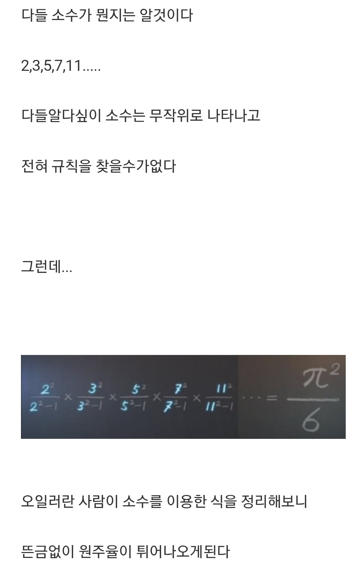
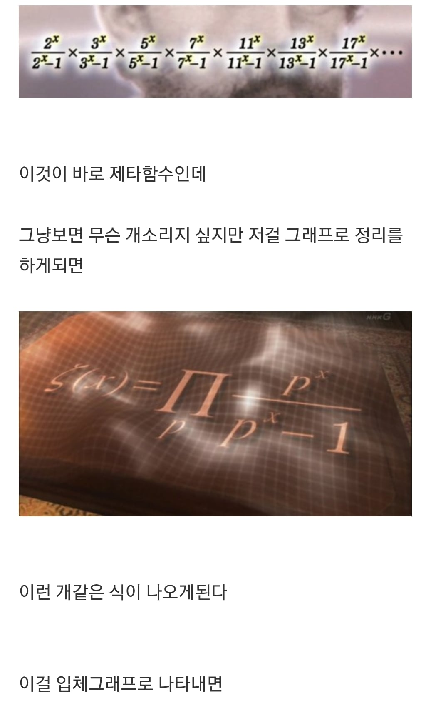
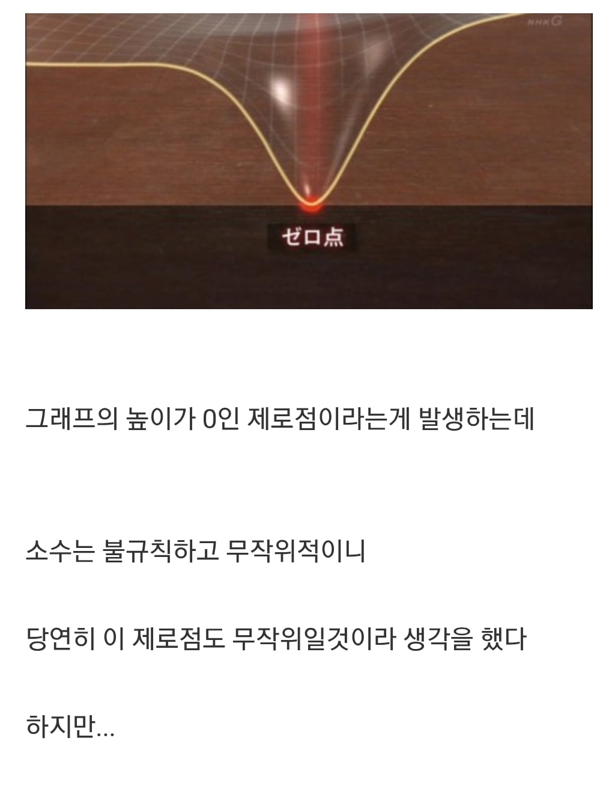
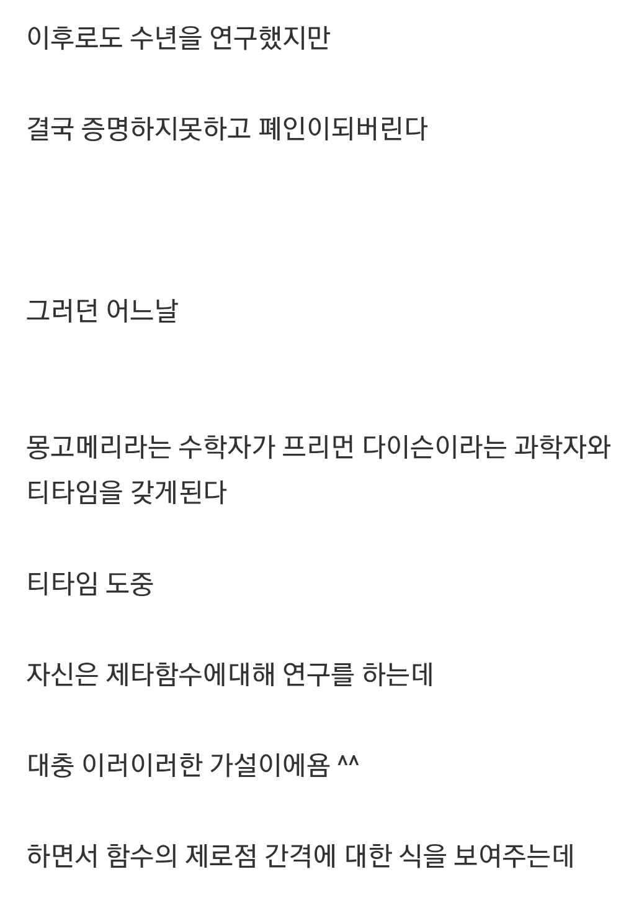
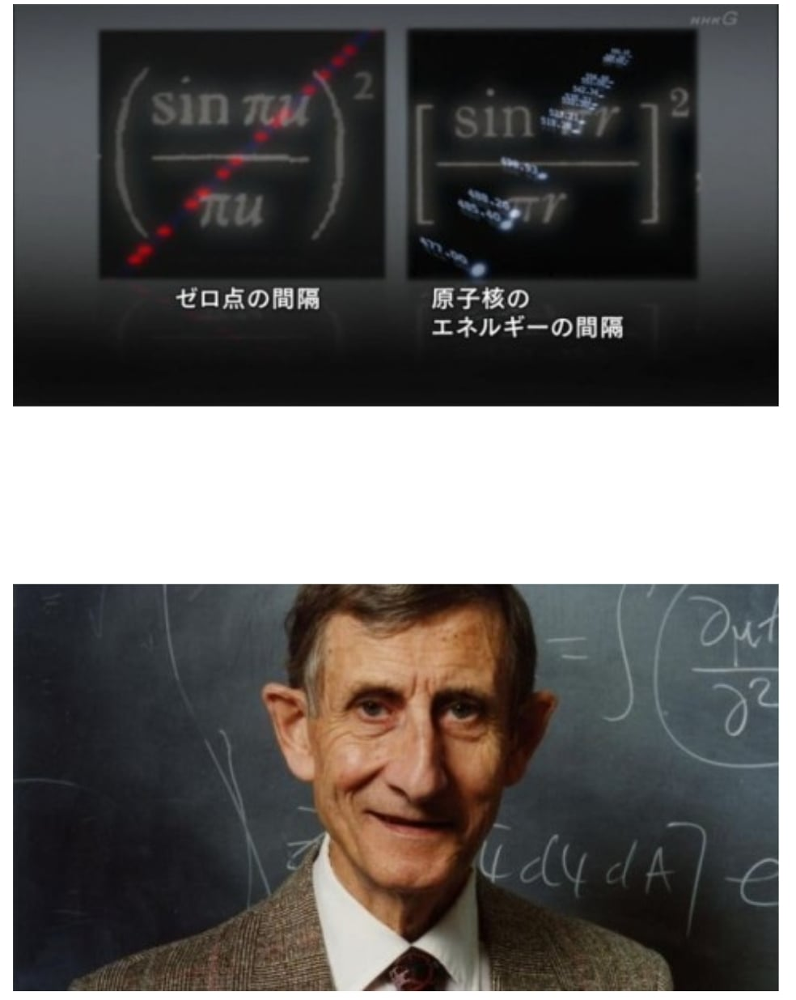
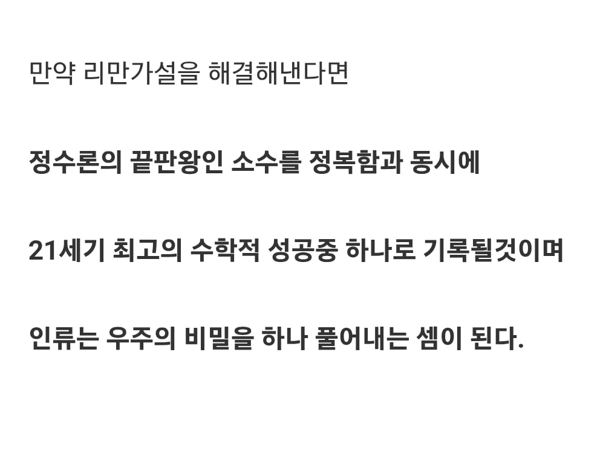

분명히 중학교 졸업했는데 뭐지..
저걸 이용해 뭘 할 수 있는가. 이게 중요한듯.
노벨상 받아서 유퀴즈 나갈수있음
그것도 문제맞춰야 100만원 받을까말까임 ㅅㄱ
나도 이 생각하면서 읽었는데 핵융합의 비밀 같은거라도 풀리나
암호해독?
그러니까 제타함수 방지턱이 있다는 말이죠?
제로점 젖꼭지같내
리만가설해결하면 렌덤함수 몰리는거 해결대나?
각오한 자는 행복하다
중학생 수준 높네에...